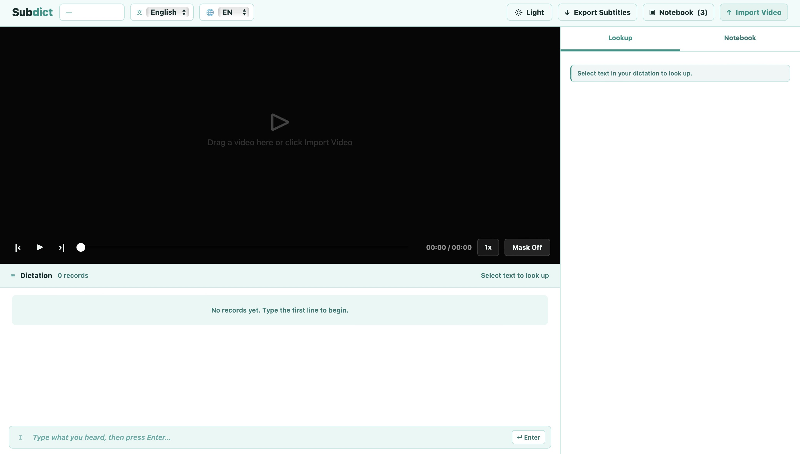
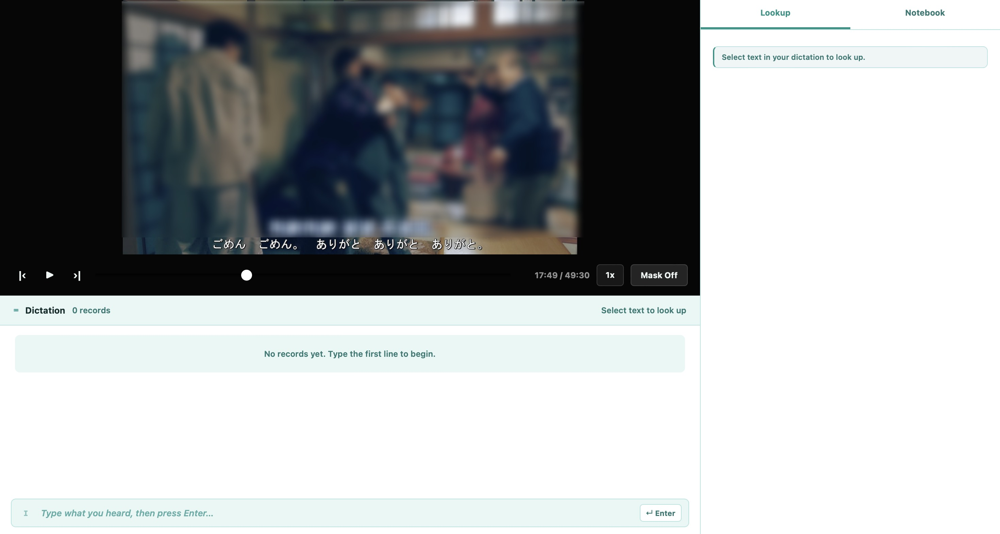
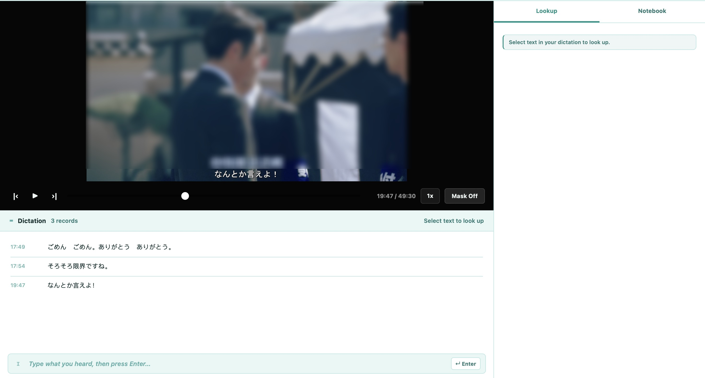
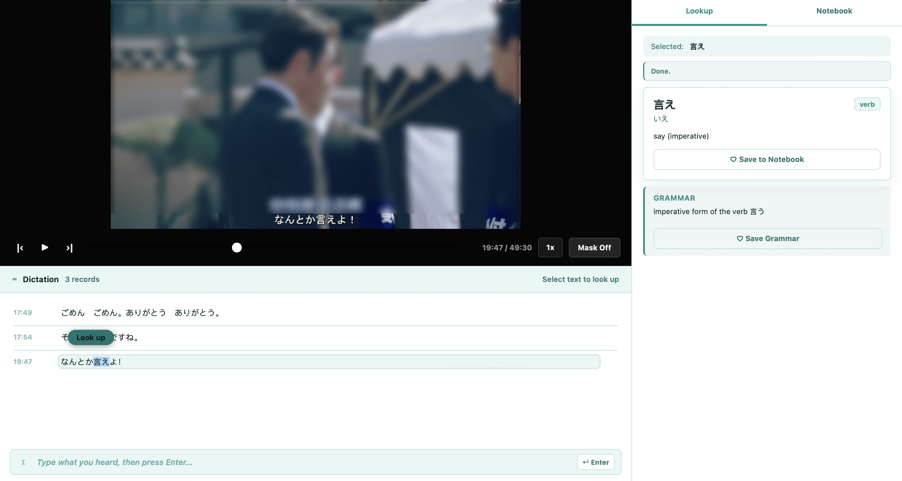
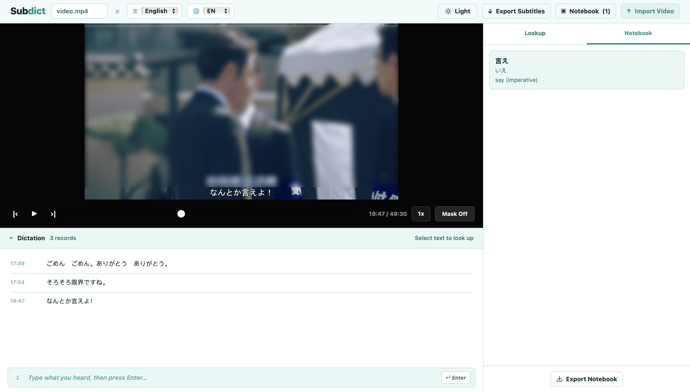
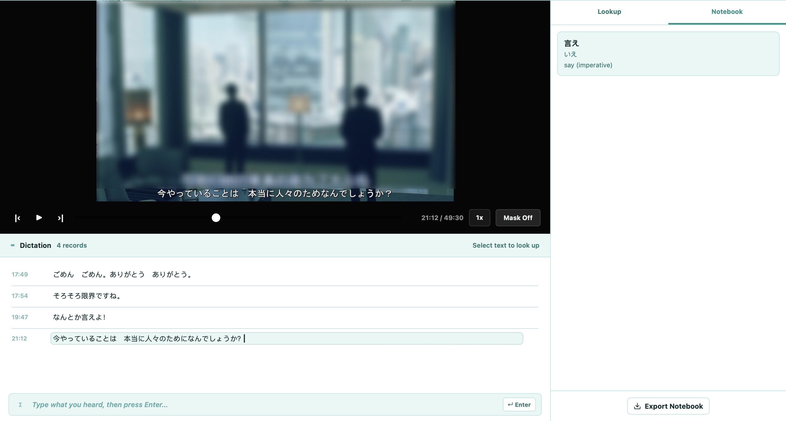

Subtitle Mask
Drag to cover subtitles and practice pure listening. Reveal with one click to check your answer.
Import any video, cover the subtitles, and practice dictation with AI-powered word lookup. Free, private, no account needed.
Start Dictation Practice →No account required · Works in your browser · 100% free

Used by polyglots and language masters worldwide
Research and elite language learners agree: the fastest path to fluency isn't grammar drills or vocabulary lists. It's intensive listening — hearing real native speech, transcribing every word, understanding it deeply, then shadowing until it becomes muscle memory.
Choose authentic content. Listen repeatedly until you can hear every word.
Write down exactly what you hear, word by word. This forces deep processing.
Look up every unknown word and grammar pattern. Understand completely.
Mimic the speaker's rhythm, intonation and speed until it feels natural.
Subdict is built specifically for this method — bringing together everything you need in one focused tool.
Drag to cover subtitles and practice pure listening. Reveal with one click to check your answer.
Select any word in your dictation to instantly get the reading, meaning, and grammar explanation.
Save vocabulary and grammar points as you learn. Export your notes anytime.
Drag any local MP4, MKV or MOV file directly into the browser window. Your video never leaves your device — everything runs locally.

Drag the mask handle to cover the subtitle area. The black bar hides both the target language and translation subtitles so you practice pure listening.

Play the video, pause when you hear something, and type what you heard. Press Enter to record each line — it automatically saves with a timestamp.

Highlight any word or phrase in your dictation. Click 'Look up' to get the reading, meaning, and grammar explanation powered by AI.

Save vocabulary and grammar points to your personal notebook as you learn. Export everything as a text file to review later.

Play the video again and read your dictation aloud in sync with the speaker. Match their rhythm, speed and intonation. This is where language becomes muscle memory.

Currently supporting Japanese and English learning
Free forever · No signup · Your data stays on your device